\(J\) e \(T_{\rm{L}}\) não são controláveis — só resta produzir o \(T_{\rm{e}}(t)\) adequado à trajetória desejada.
Carga Mecânica: Tipos
O termo carga mecânica refere-se tanto ao equipamento acionado quanto à sua curva torque vs. velocidade. Classificação usual:
Torque constante — atrito estático, elevação de carga (gruas, elevadores);
Torque linear com a rotação — atrito viscoso, corte/perfuração (tornos, furadeiras);
Torque com o quadrado da rotação — ventiladores, bombas centrífugas, compressores;
Torque inverso à rotação — potência constante (fresadoras, bobinadeiras);
Torque não uniforme — sem modelo matemático simples (forno rotativo);
Sem solicitação de torque — volantes de inércia (prensas de estampagem).
Carga Mecânica: Torque Constante e Linear
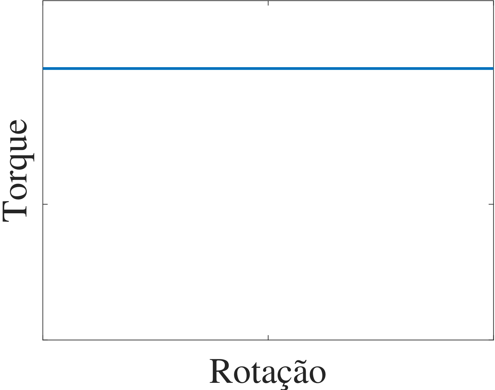
Fig. 1: Torque constante com a rotação — atrito estático, elevação de carga.
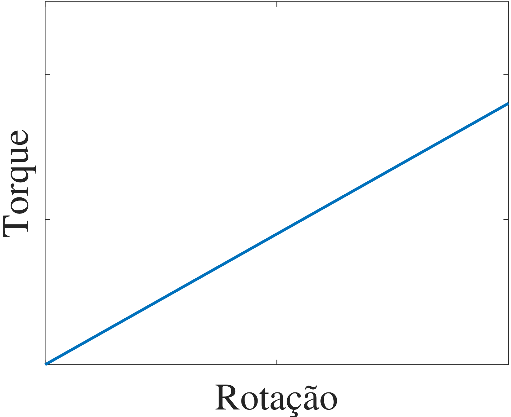
Fig. 2: Torque linear com a rotação — atrito viscoso, corte e perfuração.
Carga Mecânica: Torque Quadrático e Inverso
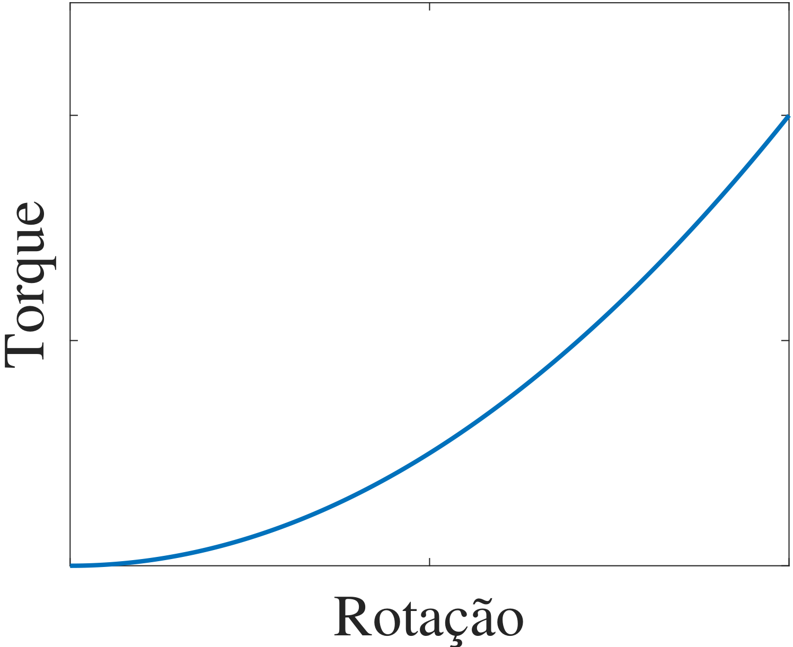
Fig. 3: Torque proporcional ao quadrado da rotação — ventiladores, bombas centrífugas.
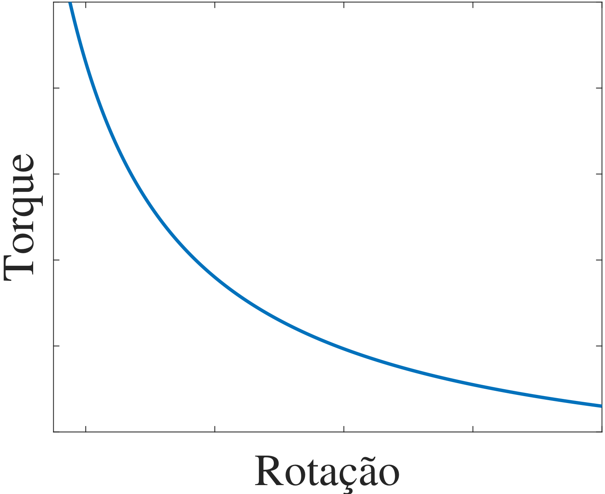
Fig. 4: Torque inversamente proporcional à rotação — potência constante.
Carga Mecânica: Torque Não Uniforme
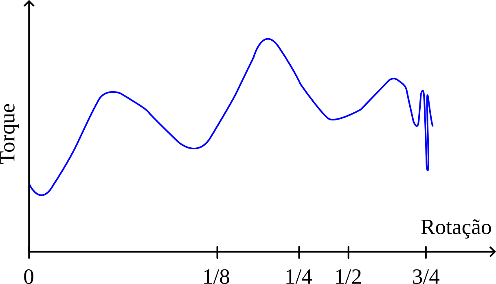
Fig. 5: Torque que varia de forma não uniforme com a rotação — típico de sistemas sem modelo matemático simples, como fornos rotativos de grande porte.
Cargas que não solicitam torque (volantes de inércia) liberam energia cinética armazenada para suprir picos de demanda; o motor apenas restaura a velocidade do volante entre um pico e outro.
Momento de Inércia
\(J\) mede, em kg.m², a resistência de um corpo a mudanças no seu movimento de rotação. Depende do eixo de giro, da forma do corpo e da distribuição de sua massa.
Um elemento de massa \(dm\), a distância \(r\) do eixo e velocidade tangencial \(v=\omega r\), tem energia cinética infinitesimal:
Como todo elemento de massa está à mesma distância \(r\) do eixo, \(r^2\) sai da integral — é o caso mais simples possível.
Momento de Inércia: Disco Maciço
Densidade superficial uniforme \(\sigma = m/(\pi R^{2})\); elemento de massa é um aro fino de raio \(r\) e espessura \(dr\): \(dm = \sigma \cdot 2\pi r\, dr\).
Fig. 7: Disco maciço de raio \(R\). Adaptado de Wikimedia Commons (Grendelkhan/Qef, CC BY-SA 3.0).
\[
J = \int_{0}^{R} r^{2}\, \sigma\, 2\pi r\, dr = 2\pi\sigma \int_{0}^{R} r^{3}\, dr = 2\pi\sigma\,\frac{R^{4}}{4} = \frac{1}{2}\,m\,R^{2}
\]
Momento de Inércia: Cilindro Maciço
Um cilindro maciço de altura \(h\) é uma pilha de discos idênticos — a altura não entra na distribuição radial de massa:
Fig. 8: Cilindro maciço de raio \(r\) e altura \(h\). Adaptado de Wikimedia Commons (Grendelkhan/Qef, CC BY-SA 3.0).
\[
J = \frac{1}{2}\,m\,R^{2}
\]
Mesma fórmula do disco — o comprimento do rotor não afeta \(J\), só a distribuição radial de massa importa.
Exemplo: Comparando Aro, Disco e Cilindro
Exemplo didático adicional (não consta no material original).
Verificação numérica da integral do disco (soma de Riemann com anéis finos) e comparação entre as três geometrias, para a mesma massa \(m = 25\) kg e raio \(R = 8\) cm:
Código
m =25.0# kgR =0.08# m# Verificacao numerica da integral do disco (soma de Riemann)sigma = m / (pi* R^2)N =200_000dr = R / NJ_numerico =0.0for i in1:N# Regra do ponto medio: o anel i vai do raio (i-1)*dr ate i*dr, entao# r_medio = [(i-1)*dr + i*dr] / 2 = [(2i - 1)/2] * dr = (i - 0.5) * dr r = (i -0.5) * drglobal J_numerico += r^2* (sigma *2*pi*r*dr)endJ_analitico =0.5* m * R^2println("J disco (integral numerica) = ", round(J_numerico, digits=6), " kg.m^2")println("J disco (formula fechada) = ", J_analitico, " kg.m^2")# Comparacao entre as tres geometrias, mesma massa e raioJ_aro = m * R^2J_cilindro =0.5* m * R^2# identico ao discoprintln()println("J aro = ", J_aro, " kg.m^2")println("J disco = ", J_analitico, " kg.m^2")println("J cilindro = ", J_cilindro, " kg.m^2")println("razao aro/disco = ", J_aro / J_analitico)
J disco (integral numerica) = 0.08 kg.m^2
J disco (formula fechada) = 0.08 kg.m^2
J aro = 0.16 kg.m^2
J disco = 0.08 kg.m^2
J cilindro = 0.08 kg.m^2
razao aro/disco = 2.0
Para a mesma massa e raio, o aro tem o dobro da inércia do disco/cilindro — faz sentido, pois no aro toda a massa está no raio máximo, enquanto no disco parte da massa está mais perto do eixo (onde contribui menos para \(J\)). Rotores de motores reais se aproximam mais do disco/cilindro maciço do que do aro.
Relações de Transmissão Mecânica
Quando a carga gira em velocidade diferente do motor (polias, engrenagens), torque e inércia de carga devem ser referidos ao eixo do motor.
Fig. 9: Acoplamento entre motor e carga por duas engrenagens de inércia desprezível.
Engrenagens de raio \(r_1, r_2\) e número de dentes \(Z_1, Z_2\).
Transmissão: Equações de Entrada e Saída
Pela 2ª lei de Newton em cada engrenagem (forças de contato \(F_{12}\), \(F_{21}\)):
Torque referido multiplica por \(i\); inércia referida multiplica por \(i^2\).
Exemplo: Torque e Inércia Referidos
Um redutor de engrenagens tem \(r_1=6\) cm, \(r_2=18\) cm (\(Z_1=20\), \(Z_2=60\) dentes). No eixo da carga: \(J_{\rm{L}}' = 0{,}5\) kg.m² e \(T_{\rm{L}}' = 40\) N.m. O motor tem \(J_{\rm{mec}} = 0{,}02\) kg.m². Calcule \(i\), o torque e a inércia de carga referidos ao eixo do motor:
Código
r1 =0.06; r2 =0.18# mZ1 =20; Z2 =60# numero de dentesJmec =0.02# kg.m^2, inercia do rotor do motorJLp =0.5# kg.m^2, inercia da carga (eixo da carga)TLp =40.0# N.m, torque de carga (eixo da carga)i_r = r1 / r2i_z = Z1 / Z2println("i (pelos raios) = ", i_r, " i (pelos dentes) = ", i_z)TL = i_r * TLp # torque de carga referido ao eixo do motorJ = Jmec + i_r^2* JLp # inercia total referida ao eixo do motorprintln("T_L referido ao motor = ", round(TL, digits=3), " N.m")println("J total referido ao motor = ", round(J, digits=4), " kg.m^2")
i (pelos raios) = 0.3333333333333333 i (pelos dentes) = 0.3333333333333333
T_L referido ao motor = 13.333 N.m
J total referido ao motor = 0.0756 kg.m^2
Note que a redução de velocidade (\(i = 1/3\)) reduz o torque de carga refletido no motor na mesma proporção, mas a inércia refletida cai com o quadrado dessa razão — por isso reduções de velocidade elevadas “escondem” boa parte da inércia da carga do ponto de vista do motor.
Transmissão com Várias Engrenagens
A mesma lógica se estende a transmissões com várias polias de inércia não desprezível:
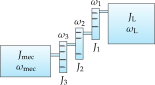
Fig. 10: Transmissão mecânica com várias engrenagens de inércia não desprezível.
O aquecimento na partida depende de \(J\); a norma limita a inércia máxima que o motor deve ser capaz de acionar. Para \(P\) em kW (potência nominal) e \(p\) pares de polos:
Um motor de \(P = 15\) kW, com \(p = 2\) pares de polos (motor de 4 polos), deve acionar uma carga com inércia total (referida ao eixo do motor) de \(1{,}8\) kg.m². Verifique se atende à norma:
Código
P =15.0# kW, potencia nominal do motorp =2# pares de polos (motor de 4 polos)J_carga =1.8# kg.m^2, inercia total referida ao eixo do motorJmax =0.04* P^0.9* p^2.5println("J_max (NBR 7094) = ", round(Jmax, digits=3), " kg.m^2")if J_carga <= Jmaxprintln("OK: J_carga = ", J_carga, " kg.m^2 <= J_max")elseprintln("ATENCAO: J_carga excede J_max, motor pode nao suportar a partida")end
A aceleração é o sinal de maior dinâmica — pode ser variada em degrau. Velocidade (integral da aceleração) e posição (integral da velocidade) têm, no máximo, dinâmica de rampa e parábola, respectivamente.
Sintetizar sinais em degrau para velocidade/posição, ou rampa para posição, exigiria aceleração infinita — o controlador tentaria produzir torque excessivo, com risco de:
quebra do eixo mecânico;
queima dos enrolamentos por excesso de corrente.
Exemplo: De um Degrau de Aceleração à Posição
Considere um degrau de aceleração \(\alpha = 50\) rad/s² aplicado por \(t=0{,}2\) s (a partir do repouso). Integrando numericamente para obter velocidade e posição ao final do degrau:
Código
alpha =50.0# rad/s^2, degrau de aceleracaot_deg =0.2# s, duracao do degraudt =0.001t =0.0:dt:t_degomega = alpha .* t # integral de um degrau = rampatheta =cumsum(omega) .* dt # integral numerica (soma acumulada) da rampa = parabolatheta_analitico =0.5* alpha * t_deg^2# conferencia: forma fechada (dupla integral de alpha constante)println("Ao final do degrau (t = ", t_deg, " s):")println(" velocidade = ", round(omega[end], digits=3), " rad/s")println(" posicao (integral numerica de omega) = ", round(theta[end], digits=3), " rad")println(" posicao (formula fechada 0,5*alpha*t^2) = ", round(theta_analitico, digits=3), " rad")
Ao final do degrau (t = 0.2 s):
velocidade = 10.0 rad/s
posicao (integral numerica de omega) = 1.005 rad
posicao (formula fechada 0,5*alpha*t^2) = 1.0 rad
Como esperado: o degrau de aceleração vira uma rampa de velocidade e uma parábola de posição — nunca um degrau em nenhuma das duas, confirmando o acoplamento mecânico entre os três sinais.
Dinâmica do Acionamento
Um bom controlador rastreia a trajetória (erro desprezível entre referência e grandeza medida) e rejeita a carga (erro não cresce quando a carga é aplicada).
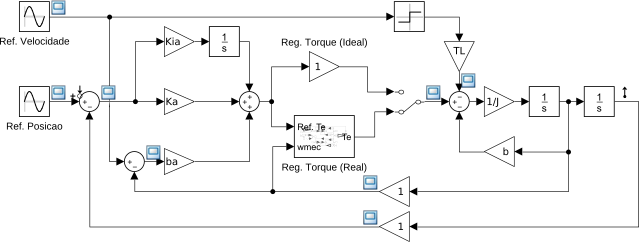
Fig. 12: Malha de rastreamento de trajetória.
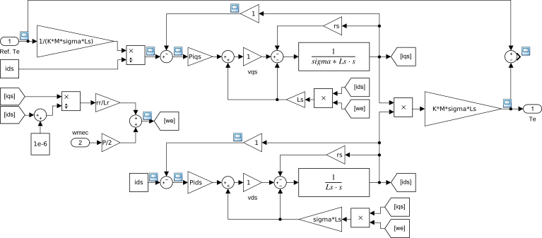
Fig. 13: Malha de rejeição de carga (regulador de torque).
Por que Regular Torque em vez de Corrente?
A malha externa rastreia a trajetória de posição e envia à malha interna uma referência de torque. Medir torque diretamente é mais difícil que medir corrente — por isso, com o modelo matemático da máquina, transforma-se torque em corrente e regula-se a corrente.
No exemplo simulado (MIT trifásico, referencial \(dq\)), a máquina sintetiza o torque eletromagnético para rejeitar torques de carga do mancal (\(T_{\rm{b}}\)) e do equipamento acionado (\(T_{\rm{L}}\)):
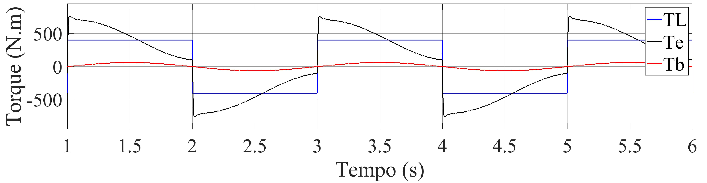
Fig. 14: Torques presentes no eixo mecânico.
Erros de Rastreamento
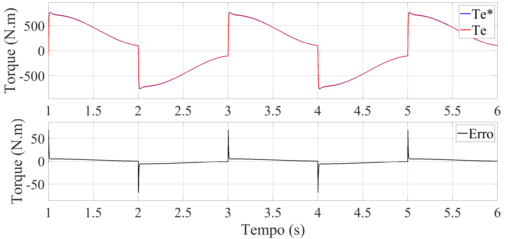
Fig. 15: Torque requisitado vs. produzido.
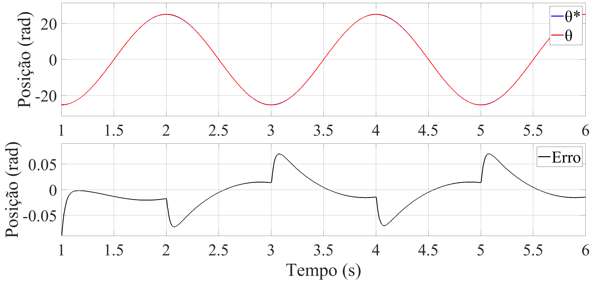
Fig. 16: Posição requisitada vs. obtida.
Maiores erros ocorrem quando a carga varia abruptamente, mas são corrigidos rapidamente: erro máximo abaixo de 9% no torque e 0,3% na posição.
Exemplo: Impacto Prático dos Erros Máximos
Para um torque requisitado de 50 N.m (erro máximo 9%) e uma posição requisitada de 10 mm (erro máximo 0,3%), qual a faixa real de valores entregues pelo acionamento?
Código
Treq =50.0# N.m, torque requisitadoerro_torque_max =0.09# 9%Treal_min = Treq * (1- erro_torque_max)Treal_max = Treq * (1+ erro_torque_max)println("Torque real entre ", Treal_min, " e ", Treal_max, " N.m")xreq =10.0# mm, posicao requisitadaerro_pos_max =0.003# 0,3%xreal_min = xreq * (1- erro_pos_max)xreal_max = xreq * (1+ erro_pos_max)println("Posicao real entre ", xreal_min, " e ", xreal_max, " mm")
Torque real entre 45.5 e 54.50000000000001 N.m
Posicao real entre 9.97 e 10.03 mm
O erro de posição (±0,03 mm) é uma ordem de grandeza mais estrito, em termos relativos, que o erro de torque (±4,5 N.m) — coerente com a malha externa de posição impor referências suaves à malha interna de torque, que reage mais rápido, porém com menos precisão relativa.
Características em Regime Permanente
Curva de torque eletromagnético vs. velocidade angular, com alimentação nominal (tensão e frequência nominais). O motor só opera em pontos coincidentes com essa curva.
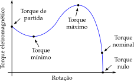
Fig. 17: Curva de operação em regime permanente com alimentação nominal.
Regime Permanente: \(T_{\rm{e}} = T_{\rm{L}}\)
No ponto de operação, \(\omega_{\rm{mec}}\) não varia mais \(\Rightarrow\) aceleração e \(T_{\rm{ac}}\) são nulos. Pela Equação 1, \(T_{\rm{e}} = T_{\rm{L}}\) — a carga define completamente o ponto de operação.
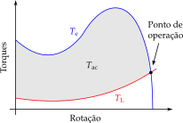
Fig. 18: Torque eletromagnético, de carga e de aceleração em regime permanente.
Pontos Notáveis da Curva de Torque
Torque nominal (\(T_{\rm{nom}}\)): com carga nominal, velocidade pouco abaixo da síncrona (escorregamento);
Torque de partida (\(T_{\rm{p}}\)): rotor bloqueado — deve vencer a inércia inicial da carga;
Torque máximo (\(T_{\rm{max}}\)): maior conjugado sem queda brusca de velocidade — vence picos/quedas de tensão;
Torque mínimo (\(T_{\rm{min}}\)): menor conjugado entre repouso e \(T_{\rm{max}}\) — não pode ser baixo demais (partida lenta, sobreaquecimento);
Torque nulo: na velocidade síncrona (escorregamento zero) — na prática, nunca atingida pelo motor de indução.
Categorias de Conjugado (Partida Direta)
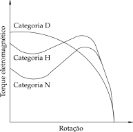
Fig. 19: Categorias de conjugado N, H e D para partida direta.
Classificação por Norma (ABNT NBR 17094 / IEC 60034-1)
Categoria N: conjugado de partida normal, corrente de partida normal, baixo escorregamento;
Categoria H: conjugado de partida alto, corrente de partida normal, baixo escorregamento;
Categoria D: conjugado de partida alto, corrente de partida normal, alto escorregamento (> 5%);
Categorias NY e NH: análogas a N e H, para partida estrela-triângulo — na ligação estrela, torque de partida e mínimo caem para 25% dos valores de N/H.
Referências
No material original, esta seção cita principalmente:
LOBOSCO, O. S.; DIAS, J. L. P. C. (1988);
WEG — Guia de Especificação de Motores Elétricos (2021);
WEG — Catálogo Técnico de Motores (2022);
WEG — Treinamento Técnico Comercial (2020).
Exercícios
Exercício 1
Classifique o tipo de carga mecânica (dentre as 6 categorias apresentadas) para: (a) um elevador de carga, (b) um exaustor industrial, (c) uma bobinadeira, (d) uma prensa de estampagem com volante de inércia.
Torque constante, independente da rotação;
Torque com o quadrado da rotação;
Torque inversamente proporcional à rotação (potência constante);
Carga que não solicita torque (volante de inércia).
Exercício 2
Um disco homogêneo de massa 40 kg e raio 12 cm gira em torno do próprio eixo (\(J = \tfrac{1}{2}mr^2\)). Calcule seu momento de inércia.
Código
m =40.0# kgr =0.12# mJ =0.5* m * r^2println("J = ", round(J, digits=4), " kg.m^2")
J = 0.288 kg.m^2
Exercício 3
Um redutor tem \(i = \omega_L/\omega_{\rm{mec}} = 0{,}25\). A carga, no seu próprio eixo, tem \(T_L' = 100\) N.m e \(J_L' = 2{,}0\) kg.m². O motor tem \(J_{\rm{mec}} = 0{,}05\) kg.m². Calcule o torque e a inércia total referidos ao eixo do motor.
Código
i =0.25TLp =100.0JLp =2.0Jmec =0.05TL = i * TLpJ = Jmec + i^2* JLpprintln("T_L referido = ", TL, " N.m")println("J total referido = ", round(J, digits=4), " kg.m^2")
Um motor de \(P=7{,}5\) kW e 6 polos (\(p=3\) pares de polos) deve acionar uma carga com inércia (referida ao motor) de \(0{,}9\) kg.m². Verifique se atende à NBR 7094.
Código
P =7.5p =3J_carga =0.9Jmax =0.04* P^0.9* p^2.5println("J_max = ", round(Jmax, digits=3), " kg.m^2")println(J_carga <= Jmax ? "OK: dentro do limite da norma":"Excede o limite da norma")
J_max = 3.823 kg.m^2
OK: dentro do limite da norma
Exercício 5
Por que a velocidade e a posição de referência não podem ser sinais em degrau, mesmo que o controlador seja ideal?
Porque velocidade em degrau exigiria aceleração infinita (derivada de um degrau), e posição em degrau exigiria velocidade infinita. Fisicamente impossível — o controlador tentaria produzir torque infinito, levando a sobrecorrente e possível dano ao motor ou ao eixo mecânico.
Exercício 6
Explique por que o torque mínimo (\(T_{\rm{min}}\)) de um motor de indução não deve ser baixo demais.
Porque, ao acelerar desde o repouso, a carga demandaria torque próximo de \(T_{\rm{min}}\) durante boa parte da partida; se \(T_{\rm{min}}\) for muito próximo do torque de carga, a aceleração resultante fica pequena, prolongando o tempo de partida e o aquecimento do motor por corrente elevada.